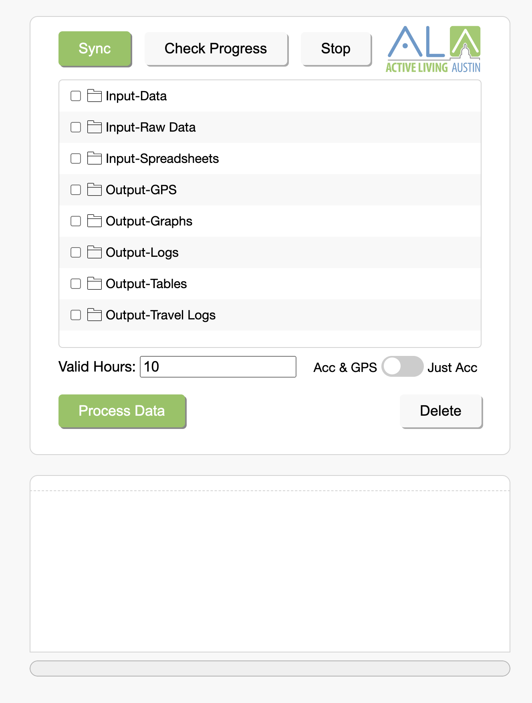

Hi, I'm Josh.
I just graduated with my Ph.D. in computer science, where I focused on applied machine learning. My main area of research was in the area of activity recognition, seeking to develop novel machine learning techniques designed to recognize Activities of Daily Living. I've also worked on and published in other areas including gesture recognition, sketch recognition, eye tracking, and intelligent tutoring systems.
Publications
Dissertation
Cherian, J. Towards Actualizing Real-World Human Activity Recognition for Elderly Care. Texas A&M University PhD Dissertation, March 8, 2023.
Thesis
Cherian, J. Recognition of Everyday Activities through Wearable Sensors and Machine Learning. Texas A&M University Master’s Thesis, December 9, 2016.
Over the past several years, the use of wearable devices has increased dramatically,primarily for fitness monitoring, largely due to their greater sensor reliability, increasedfunctionality, smaller size, increased ease of use, and greater affordability.These deviceshave helped many people of all ages live healthier lives and achieve their personal fitness goals, as they are able to see quantifiable and graphical results of their efforts every step of the way (i.e. in real-time). Yet, while these device systems work well within the fitness domain, they have yet to achieve a convincing level of functionality in the larger domain of healthcare.
As an example, according to the Alzheimer’s Association, there are currently approximately 5.5 million Americans with Alzheimer’s Disease and approximately 5.3 million of them are over the age of 65, comprising 10% of this age group in the U.S. The economic toll of this disease is estimated to be around $259 billion. By 2050 the number of Americans with Alzheimer’s disease is predicted to reach around 16 million with an economic toll of over $1 trillion. There are other prevalent and chronic health conditions that are critically important to monitor, such as diabetes, complications from obesity, congestive heart failure, and chronic obstructive pulmonary disease (COPD) among others.
The goal of this research is to explore and develop accurate and quantifiable sensing and machine learning techniques for eventual real-time health monitoring by wearable device systems. To that end, a two-tier recognition system is presented that is designed to identify health activities in a naturalistic setting based on accelerometer data of common activities. In Tier I, a traditional activity recognition approach is employed to classify short windows of data, while in Tier II, these classified windows are grouped to identify instances of a specific activity. Everyday activities that were explored in this research include brushing one’s teeth, combing one’s hair, scratching one’s chin, washing one’s hands, taking medication, and drinking. Results show that an F-measure of 0.83 is achievable when identifying these activities from each other and an F-measure of of 0.82 is achievable when identifying instances of brushing teeth over the course of a day.
Conference & Workshop Publications
Kim, S., Cherian, J., Ray, S., Lacy, A., Taele, P., Koh, J.I., Hammond, T. A Wearable Haptic Interface for Assisting Blind and Visually Impaired Students in Learning Algebraic Equations. 2023 ACM CHI Conference on Human Factors in Computing Systems Late-Breaking Work (CHI 2023 LBW), Hamburg, Germany. Apr. 23-28, 2023
BVI (blind and visually impaired) persons do not have the same degree of access to concepts and procedures in learning algebraic equations as sighted persons. As tactile resources are uncommon, most rely on auditory-based methods that place heavy stress on working memory. We propose a novel approach that leverages haptic technology to communicate mathematical symbols via vibrotactile patterns; this design addresses open challenges found in existing resources for BVI people and explores the potential utility of this medium for all users. We conducted three separate studies to evaluate the feasibility of our gloves that included BVI participants. The outcomes of our studies yielded insightful design discussions, including a blind participant who found the device immediately intuitive and exciting in potential.
Williford, B., Ray, S., Koh, J.I., Cherian, J., Taele, P., Hammond, T. Exploring Creativity Support for Concept Art Ideation. 2023 ACM CHI Conference on Human Factors in Computing Systems Late-Breaking Work (CHI 2023 LBW), Hamburg, Germany. Apr. 23-28, 2023
Creatives often struggle with fixation on a narrow set of ideas. There is potential for co-creative systems to stimulate creatives in new and powerful ways. We sought to lay a foundation for such systems with an exploratory study. We recruited 20 university students and asked them to rapidly draw a series of creature concepts with two technology probes, one of which generates ambiguous stimuli from user strokes. We analyzed the 240 sketches visually and discovered that while most participants were fixated on humanoid forms, those that began sketching with the ambiguous stimuli first were provoked to explore more unusual varieties (p < 0.01). We also interviewed participants and used thematic analysis to analyze the data. While some participants resisted the partial loss of control and freedom, most believed the stimuli encouraged more divergent exploration and holistic thinking, and they acknowledged their potential benefit in the earliest stages of the ideation process.
Abbasian, P., Cherian, J., Taele, P., Hammond, T. Early Mild Cognitive Impairment Detection using a Hybrid Model. . Companion Proceedings of the 28th International Conference on Intelligent User Interfaces (IUI '23), Sydney, Australia. Apr. 27, 2023
Convolutional Neural Networks (CNNs) have been used in image-based applications and have made significant progress toward early detection of hard-to-detect diseases such as Mild Cognitive Impairment (MCI) and its prodromal stage Alzheimer’s Disease (AD). Despite this progress, there has been limited research on accurately distinguishing Normal Cognitive (NC) subjects from Early Mild Cognitive Impairment (EMCI) at the subject-level. This paper aims to address this gap by proposing the use of structural MRI (sMRI) images and demographic information, in conjunction with predictive models based on a shallow CNN architecture and a supervised hybrid neural network, to distinguish EMCI from NC at both the slice and subject level. These models have fewer parameters but still maintain a high level of performance in classifying EMCI and NC images and require fewer computational resources. Moreover, the model’s performance was trained and tested using only the initial and first-year visit MRI images from the newly released ADNI3 dataset.
Koh, J.I., Ray, S., Cherian, J., Taele, P., Hammond, T. An Intelligent Virtual Meeting App for Seamlessly Polling Virtual Participants "On-the-Fly" with Nonverbal Communication Cues. . Companion Proceedings of the 28th International Conference on Intelligent User Interfaces (IUI '23), Sydney, Australia. Apr. 27, 2023
The prevalence of virtual meeting software and webcams have normalized holding group meetings both remotely and distributed. However, virtual meetings reduce viewing to computing displays and listening to unidirectional speakers, which disrupt real-life social cues for activities such as informally polling participants “on-the-fly”. This paper proposes an intelligent virtual meetings app called Show of Hands, which leverages nonverbal communication cues to spontaneously poll virtual participants. The app recognizes virtual participants’ intuitive real-time hand gestures to express intended polling selections, and then displays in real-time highly-visible video filters that overlay participants’ camera views and a visual chart of the aggregated polling counts. Our work benefits virtual participants in seamlessly conducting spontaneous polls to gauge opinions or check knowledge of attendees without prior preparation, expressing poll responses using familiar physical gestures, and being better informed of poll results with both a distributed view of video filters and a focused chart visualization.
Maity, S., Taele, P., Cherian, J., Ray, S., Koh, J.I., Hammond, T. Chemisketch: Learning Lewis Dot Diagrams with Pen-Based Editing Interactions and Immediate Feedback. Companion Proceedings of the 28th International Conference on Intelligent User Interfaces (IUI '23), Sydney, Australia. Apr. 27, 2023
Introductory chemistry courses teach the process of drawing basic chemical molecules with the use of Lewis dot diagrams. However, many beginner students struggle in mastering these diagrams. While there exists educational applications that focus on assisting students in learning Lewis dot diagrams, these applications do not leverage students’ pen-and-paper activities in practicing their usage of Lewis dot diagrams. Furthermore, there exists automated sketch recognition approaches that focus on classifying advanced chemical diagrams, but such approaches focus more on robustly recognizing experts’ completed diagrams and less on assessing novices’ practice diagrams. In this study, we propose an intelligent tutoring system for enabling students to practice constructing Lewis dot diagrams (i.e., constructing, checking, and modifying) with automatic constructive feedback, while allowing them to retain their familiar writing conventions similarly to pen and paper.
Koh, J.I., Ray, S., Cherian, J., Taele, P., Hammond, T. Show of Hands: Leveraging Hand Gestural Cues in Virtual Meetings for Intelligent Impromptu Polling Interactions. 27th International Conference on Intelligent User Interfaces (IUI '22), Helsinki, Finland. Mar. 22-25, 2022
Increased virtual meeting software usage has allowed people to meet remotely in a more seamless fashion. However, compared to in-person meetings, valuable interaction cues such as impromptu group polling are less optimally executed due to increased difficulty in gauging remote participants, while also requiring prior meeting setup for automated counting with built-in polling tools. We propose a novel intelligent user interface approach for virtual meeting software that supports impromptu polling interactions by leveraging real-time hand gesture recognition and video filter feedback. We conducted studies to design and evaluate this intuitive gesture-based polling system with visual feedback. Our results demonstrated that our system was able to recognize attendees’ gestures and poll responses with reasonable accuracy, and showed improvements in hosts’ task workload performance. From our findings, our interface informs hosts of valuable results while maintaining organic gestural interaction cues with attendees similar to in-person meetings.
Leland J., Stanfill, E., Cherian, J., Hammond, T. Recognizing Seatbelt-Fastening Activity with Wearable Technology and Machine Learning. 2021 ACM CHI Conference on Human Factors in Computing Systems Late-Breaking Work (CHI 2021 LBW), Yokohama, Japan. May. 8-13, 2021
Nearly 1.35 million people are killed in automobile accidents every year, and nearly half of all individuals involved in these accidents were not wearing their seatbelt at the time of the crash. This lack of safety precaution occurs in spite of the numerous safety sensors and warning indicators embedded within modern vehicles. This presents a clear need for more effective methods of encouraging consistent seatbelt use. To that end, this work leverages wearable technology and activity recognition techniques to detect when individuals have buckled their seatbelt. To develop such a system, we collected smartwatch data from 26 different users. From this data, we identified trends which inspired the development of novel features. Using these features, we trained models to identify the motion of fastening a seatbelt in real-time. This model serves as the basis for future work in which systems can provide personalized and effective interventions to ensure seatbelt use.
Cherian, J., Ray, S., Hammond, T. An Activity Recognition System for Taking Medicine Using In-The-Wild Data to Promote Medication Adherence. 26th International Conference on Intelligent User Interfaces (IUI '21), College Station, Texas, USA. Apr. 13-17, 2021
Nearly half of people prescribed medication to treat chronic or short-term conditions do not take their medicine as prescribed. This leads to worse treatment outcomes, higher hospital admission rates, increased healthcare costs, and increased morbidity and mortality rates. While some instances of medication non-adherence are a result of problems with the treatment plan or barriers caused by the health care provider, many are instances caused by patient-related factors such as forgetting, running out of medication, and not understanding the required dosages. This presents a clear need for patient-centered systems that can reliably increase medication adherence. To that end, in this work we describe an activity recognition system capable of recognizing when individuals take medication in an unconstrained, real-world environment. Our methodology uses a modified version of the Bagging ensemble method to suit unbalanced data and a classifier trained on the prediction probabilities of the Bagging classifier to identify when individuals took medication during a full-day study. Using this methodology we are able to recognize when individuals took medication with an F-measure of 0.77. Our system is a first step towards developing personal health interfaces that are capable of providing personalized medication adherence interventions.
Williford, B., Runyon, M., Cherian, J., Li, W.K., Linsey, J., Hammond, T. A Framework for Motivating Sketching Practice with Sketch-based Gameplay. CHI PLAY'19, Barcelona, Spain, Oct. 22-25, 2019
Sketching is a valuable skill to learn but requires extensive motivation and practice to improve. We present a framework for motivating practice with sketch-based gameplay that is rooted in a grounded theory study of the motivations of various individuals with different skills levels. The individuals interviewed included a range from novice and intermediate industrial design students to established design professionals. Four categories emerged that explain the differences in motivation between individuals with different skill levels, including achievement, competition, communication, and creativity. We also present a case study of the implementation of two different gameplay approaches for encouraging line work practice in a high school art course and a university sketching course. The study revealed that both approaches were very engaging and motivating to students, with 72,842 lines practiced across the 150 students overall. We also gained insights about how the approaches differed in motivating students, and share principles we learned on motivating students with gameplay that may be useful to other researchers, educators, and technologists.
Mendiola, V., Doss, A., Adams, W., Ramos, J., Bruns, M., Cherian, J., Kohli, P., Goldberg, D., Hammond, T. Automatic Exercise Recognition with Machine Learning. 33rd AAAI Conference on Artificial Intelligence International Workshop on Health Intelligence (W3PHAI'19), Honolulu, Hawaii, USA. Jan. 27-Feb. 1, 2019
Although most individuals understand the importance of regular physical activity, many still lead mostly sedentary lives. The use of smartphones and fitness trackers has mitigated this trend some, as individuals are able to track their physical activity; however, these devices are still unable to reliably recognize many common exercises. To that end, we propose a system designed to recognize sit ups, bench presses, bicep curls, squats, and shoulder presses using accelerometer data from a smartwatch. Additionally, we evaluate the effectiveness of this recognition in a real-time setting by developing and testing a smart- phone application built on top of this system. Our system recognized these activities with overall F-measures of 0.94 and 0.87 in a controlled environment and real-time setting respectively. Both users who were and who were not regularly physically active responded positively to our system, noting that our system would encourage them to start or continue exercising regularly.
Cherian, J. Automatic Recognition of Hygiene Activities and Personalized Interventions for Chronic Care. 23rd International Conference on Intelligent User Interfaces (IUI '18), Tokyo, Japan. Mar. 7-11, 2018
The number of individuals living with chronic conditions continues to rise. As a result, a significant emphasis has been placed on both improving their quality of life as well as decreasing the cost and burden of caring for them. One particularly promising avenue for achieving this is the use of wearable devices, as they have become both affordable and reliable in recognizing fitness activities. However, while the existing algorithms reliably recognize physically intensive activities (e.g., walking vs. swimming), they fail to recognize personal hygiene actives that have more subtle differences (e.g., brushing teeth vs. washing hands). This research aims to develop novel features and intelligent, multi-stage algorithms that can reliably recognize such personal hygiene activities for chronic care. Additionally, we aim to further supplement this activity recognition with personalized interventions that enable individuals to manage their own personal health.
Bauman, B., Gunhouse, R., Jones, A., Da Silva, W., Sharar, S., Rajanna, V., Cherian, J., Koh, J., Hammond, T. VisualEYEze: A Web-based Solution for Receiving Feedback on Artwork Through Eye Tracking. 23rd International Conference on Intelligent User Interfaces Workshop on Web Intelligence and Interaction (WII 2018), Tokyo, Japan. Mar. 7-11, 2018
Artists value the ability to determine what parts of their composition is most appreciated by viewers. This information normally comes straight from viewers in the form of oral and written feedback; however, due to the lack of participation on the viewers part and because much of our visual understanding of artwork can be subconscious and difficult to express verbally, the value of this feedback is limited. Eye tracking technology has been used before to analyze artwork, however, most of this work has been performed in a controlled lab setting and as such this technology remains largely inaccessible to individual artists who may seek feedback. To address this issue, we developed a web-based system where artists can upload their artwork to be viewed by the viewers on their computer while a web camera tracks their eye movements. The artist receives feedback in the form of visualized eye tracking data that depicts what areas on the image looked at the most by viewers. We evaluated our system by having 5 artists upload a total of 17 images, which were subsequently viewed by 20 users. The artists expressed that seeing eye tracking data visualized on their artwork indicating the areas of interest is a unique way of receiving feedback and is highly useful. Also, they felt that the platform makes the artists more aware of their compositions; something that can especially help inexperienced artists. Furthermore, 90% of the viewers expressed that they were comfortable in providing eye movement data as a form of feedback to the artists.
Cherian, J. and Hammond, T. A Two Tier Recognition System for Recognizing Brushing Teeth. Richard Tapia Celebration of Diversity in Computing Conference 2017 (Tapia '17), Atlanta, Georgia. Sept. 20-23, 2017
Cherian, J., Rajanna, V., Goldberg, D., and Hammond, T. Did you Remember to Brush? A Noninvasive Wearable Approachto Recognizing Brushing Teeth for Elderly Care. 11th EAI International Conference on Pervasive Computing Technologiesfor Healthcare. Barcelona, Spain. May 23–26, 2017
Failing to brush one’s teeth regularly can have surprisingly serious health consequences, from periodontal disease to coronary heart disease to pancreatic cancer. This problem is especially worrying when caring for the elderly and/or individuals with dementia, as they often forget or are unable to perform standard health activities such as brushing their teeth, washing their hands, and taking medication. To ensure that such individuals are correctly looked after they are placed under the supervision of caretakers or family members, simultaneously limiting their independence and placing an immense burden on their family members and caretakers. To address this problem we developed a non-invasive wearable system based on a wrist-mounted accelerometer to accurately identify when a person brushed their teeth. We tested the efficacy of our system with a month-long in-the-wild study and achieved an accuracy of 94% and an F-measure of 0.82.
Cherian, J., Goldberg, D., and Hammond, T. Sensing Day-to-Day Activities through Wearable Sensors and AI. 2016 Workshop on Analysis of Movement Data (GIScience 2016), Montreal, Canada. Sept. 27, 2016
Journal Publications
Petersheim, C., Lahey, J., Cherian, J., Pina, A., Alexander, G., Hammond, T. Comparing Student and Recruiter Evaluations of Computer Science Resumes. IEEE Transactions on Education, August 2022
Contribution: This study identifies which entry-level computer science (CS) resume items are most important and compares the ratings of student and recruiter participants to investigate the accuracy of student beliefs. To the authors’ knowledge, this study is the first to analyze the extent to which CS students understand the resume screening process. The results of this have consequences for students in their own resume development. Background: Although prior research studies the importance of different resume items generally, little is known about resumes for CS majors, which may contain distinctive sections. Less still is known about whether students understand the resume screening process. Research Questions: Which items on entry-level CS resumes most directly influence screening decisions? What gaps exist between CS students’ and recruiters’ perceptions of resume items? Does the disparity in expertise between students and recruiters contribute to differences in resume screening? Methodology: 197 recruiters and 73 CS undergraduates screened randomized CS resumes. Data were analyzed using ordinary least-squares regression with interactions. Findings: Students were more likely than recruiters to move resumes to the next level and spent about 7 s less than recruiters when screening resumes. Though students correctly assessed the value of most resume items, they significantly overestimated the value of prior work experience such as internships.
Edey, D., Hillin, J., Thompson, C.M., Cherian, J., Hammond, T. Closing the Gender Gap in Natural Hazards Education for Young Adults. Journal for STEM Education Research, March 2022
Different people react differently to disasters, hazards, and risks depending on how they view those risks. Various factors can influence these risk perceptions, including demographic characteristics, such as gender and previous experience. Disaster education (DE) has been identified as a method to positively influence risk perception and reduce disaster vulnerability and impacts at various scales. Gender has been identified as an influencing factor on risk perception and educational outcomes in STEM subjects in previous studies, but the role gender plays in a formal DE program has not previously been evaluated. This study utilizes a formal online DE curriculum program to evaluate genders’ role in young adults’ knowledge and risk perceptions of natural hazards before and after DE curriculum completion. Statistical analysis t-tests indicated that women scored significantly lower than men in individual and total module pre-tests. However, this gender gap was closed in total module post-scores. Women overall had consistently higher risk perceptions according to both t-tests (p < 0.05) and regression models, but both genders had increased risk perceptions (p < 0.05) and overall program scores at the end of the course (p < 0.001). Women also started and ended the course with greater feelings of fear than men (p < 0.05), whereas men felt more knowledgeable about hazards than women (p < 0.05). Statistically significant differences between the two genders were identified for pre-curriculum scores, and gender had a strong, consistent influence on risk perception. Women were also found to have higher risk perceptions before and after the course, but both genders experienced an increase in risk perception scores. The DE course increased awareness and closed the knowledge gap between genders.
Edey, D., Thompson, C.M., Cherian, J., Hammond, T. Online Local Natural Hazards Education for Young Adults: Assessing Program Efficacy and Changes in Risk Perceptions for Texas natural Hazards. Journal of Geography in Higher Education, January 2021
Risk perceptions can influence how people prepare, react, and respond to a natural hazard. For dependent populations with increased vulnerability, such as youth, adolescents, and young adults, hazard education programs can influence their risk perceptions and increase their hazard awareness. However, most school curriculum does not include in-depth formal natural hazards education; Texas curriculum in secondary schools, for example, does not typically cover local natural hazards or their impacts in-depth due to other curriculum priorities. Thus, students may not be receiving potentially life-saving information on their local natural hazards or how to plan for or respond to disasters. In response, this research presents a formal, online, and youth-centric natural hazard educational (NHE) curriculum that examines the curriculum’s effects on risk perception and subject matter proficiency using a local pilot study with college students as proxies for high school adolescents in Texas. Results suggest that the curriculum content improved overall natural hazards knowledge in participants (p < 0.01) and that participants with higher post-curriculum scores demonstrated higher risk perception and hazard awareness. These findings demonstrate how exposure to natural hazards educational programs can increase hazard awareness and coping capacity in young adults and adolescents
Koh, J., Cherian, J., Taele, P., Hammond, T. Developing a Hand Gesture Recognition System for Mapping Symbolic Hand Gestures to Analogous Emoji in Computer-Mediated Communication. ACM Transactions on Interactive Intelligent Systems (TiiS), February 2019
Recent trends in computer-mediated communications (CMC) have not only led to expanded instant messaging through the use of images and videos, but have also expanded traditional text messaging with richer content in the form of visual communication markers (VCM) such as emoticons, emojis, and stickers. VCMs could prevent a potential loss of subtle emotional conversation in CMC, which is delivered by nonverbal cues that convey affective and emotional information. However, as the number of VCMs grows in the selection set, the problem of VCM entry needs to be addressed. Furthermore, conventional means of accessing VCMs continue to rely on input entry methods that are not directly and intimately tied to expressive nonverbal cues. In this work, we aim to address this issue, by facilitating the use of an alternative form of VCM entry: hand gestures. To that end, we propose a user-defined hand gesture set that is highly representative of a number of VCMs and a two-stage hand gesture recognition system (trajectory-based, shape-based) that can identify these user-defined hand gestures with an accuracy of 82%. By developing such a system, we aim to allow people using low-bandwidth forms of CMCs to still enjoy their convenient and discreet properties, while also allowing them to experience more of the intimacy and expressiveness of higher-bandwidth online communication.
Hammond, T., Kumar, S., Runyon M., Cherian, J., Williford, B., Keshavabhotla, S., Li, W., Linsey, J. It’s Not Just About Accuracy: Metrics That Matter When Measuring Expert Sketching Ability. ACM Transactions on Interactive Intelligent Systems (TiiS). July 2018
Design sketching is an important skill for designers, engineers, and creative professionals as it allows them to express their ideas and concepts in a visual medium. Being a critical and versatile skill for many different disciplines, courses on design sketching are often taught in universities. Courses today predominately rely on pen and paper; however, this traditional pedagogy is limited by the availability of human instructors who can provide personalized feedback. Using a stylus-based intelligent tutoring system called SketchTivity, we aim to eventually mimic the feedback given by an instructor and assess student-drawn sketches to give students insight into areas for improvement.
In order to provide effective feedback to users, it is important to identify what aspects of their sketches they should work on to improve their sketching ability. After consulting with several domain experts in sketching, we came up with several classes of features that could potentially differentiate expert and novice sketches. Because improvement on one metric, such as speed, may result in a decrease in another metric, such as accuracy, the creation of a single score may not mean much to the user. We attempted to create a single internal score that represents overall drawing skill so that the system can track improvement over time, and found that this score correlates highly with expert rankings. We gathered over 2000 sketches from 20 novices and four experts for analysis. We identified key metrics for quality assessment that were shown to significantly correlate with the quality of expert sketches and provide insight into providing intelligent user feedback in the future.
Projects
Active Living Austin
This study aimed to understand how activity-friendly communities can impact the level of physical activity among residents. As a computer science researcher on this project, I developed a machine learning pipeline capable of identifying the physical activity of study participants from their accelerometer and GPS data. I also designed and developed a website that allowed the non-computer science researchers on the project to upload newly collected sensor data and obtain the classification results.
FDAnalyzer

This was a data visualization tool developed to visualize the FDA Adverse Event Reporting System (FAERS) dataset.
I was responsible for all of the front-end work.
Startups Visualization

Click to interact
This was a data visualization tool developed to visualize startup information from a variety of sources.
I was responsible for all of the front-end work.